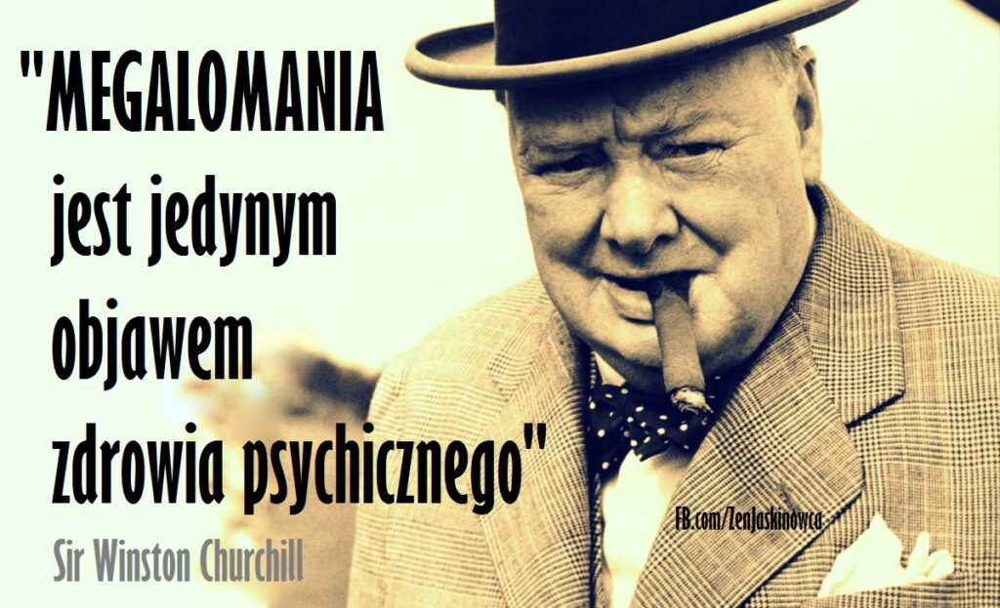

Donald Trump jest zdecydowanie jednym z najbardziej charakterystycznych, charyzmatycznych i narcystycznych ludzi na świecie. Lubisz, nie lubisz, zgadzasz się z nim lub nie ale prawda jest taka – w tym co robi jest metoda i metoda ta działa.
Najpierw przenosimy się aż do Nowego Jorku. To dobra wiadomość. Zła wiadomość jest taka, że jest rok 1964, w dodatku jest listopad, w dodatku jesteśmy na moście, więc jest zimno, wieje i odmarzają nam uszy. Ale to nic – dzieją się dwie ważne rzeczy: most na którym jesteśmy to Verrazano Narrows Bridge i właśnie go otwierają. Razem z nami – 5000 obserwatorów. Ale nas interesuje jedynie dwóch: 85-letni Othmar Ammann, czyli główny architekt mostu i (wciąż) żywa legenda oraz przyszła leganda czyli 18-letni Donald Trump, syn milionera z branży budowlanej.
A oto dlaczego interesuje nas ta scena: Ammann, facet który całe życie poświęcił budowaniu mostów głównie dla Nowego Jorku, nie zostaje przez notabli ani uhonorowany ani nawet wspomniany. Jest pominięty. Jeden z pięciu tysięcy. Co wiele lat później Donald wspomina tak:
"I właśnie wtedy zdałem sobie sprawę, że jeśli pozwolisz na to by ludzie traktowali Cię tak jak chcą, zrobią z Ciebie głupka. A ja nie będę niczyim frajerem."
Jak pomyślał, tak zrobił. A czego nauczy nas Wielki Donald? A nauczy nas jak REALNIE działa świat i co ten realny świat nagradza. Powtarzam – prawdziwy świat a nie ten życzeniowy. I bez wątpienia NIE będzie to opowieść o skromności, wrażliwości i miłości do bliźniego. A skoro nie mówimy o skromności, wrażliwości i miłości do bliźniego to o czym mówimy? Mówimy o:
bezwstydnej megalomanii
radosnym sadyzmie
i zuchwałej nonszalancji
Z tych 3 składników upieczony jest sukces Trumpa. Marzy Ci się coś wielkiego i ociekającego złotem? To bierz przykład. Trump pojawia się z podręcznikach psychologii i psychiatrii amerykańskiej pod hasłami 'narcyzm’ i 'narcystyczne zaburzenie osobowości’, co jest niedopowiedzeniem biblijnych rozmiarów. Przy Donaldzie, sam czystej krwi narcyzm poczułby się jak niedorozwój. Trump mówi o sobie:
"Postrzegam siebie jako bardzo uczciwego faceta w bardzo skorumpowanym świecie. I uważam się za bardzo miłą osobę. Ludzie, którzy mnie znają, lubią mnie. (…) Bardzo trudno zaatakować mnie w oparciu o wygląd, bo jestem bardzo przystojny. Moje palce są długie i piękne, podobnie zresztą jak inne części mojego ciała, co jest bardzo dobrze udokumentowane."

Tak więc jeśli chcesz zostać prezydentem USA i miliarderem – buduj ego do rozmiarów wieżowca. Chcesz odnieść sukces – musisz się w sobie zakochać ze wzajemnością. Albo ego alboś frajer. Głos zabierze sam bohater tekstu:
"Pokaż mi kogoś bez ego a ja Ci pokaże nieudacznika. Posiadanie zdrowego ego, dobrej opinii o sobie, jest w życiu bardzo pozytywne!"
"Człowiek jest najbardziej dzikim ze wszystkich zwierząt a życie jest serią bitew kończących się zwycięstwem lub przegraną. (…) W zdecydowanej większości nie możesz szanować ludzi bo większość ludzi nie jest godna szacunku"
Tak, to słowa Trumpa. Jest to absolutnie klasyczny przykład postrzegania świata przez ludzi sukcesu. Czyli spojrzenie na świat jako scenę walki o byt. Zwycięzcy i przegrani. I dalej:
"Kocham posiadać wrogów. Zwalczam ich. Uwielbiam wbijać ich w ziemię"
Ludzie nie mają problemu z angażowaniem się w rzeczy lekkie, łatwe i przyjemne. Jeśli wygrywanie jest dla Ciebie przyjemne i jeśli postrzegasz siebie jako osobę, która wygrywa zawsze i łatwo – jeśli wierzysz w siebie bardziej niż we wroga – to strach przed konfliktem nie istnieje.
"Jeśli wygrywasz, to wszystko uchodzi Ci płazem. A ja wygrywam, wygrywam, zawsze wygrywam. Koniec końców, zawsze wygram – czy w golfie, czy w tenisie, czy w życiu. Ja po prostu zawsze wygrywam. I mówię ludziom, że wygrywam, bo tak jest"
Zuchwała nonszalancja - w tym The Donald jest absolutnym geniuszem, ponieważ udało mu się stworzyć „teflonową postać” – czyli postać, której właściwie wszystko ujdzie płazem. A mianowicie – Trump stworzył dla siebie swoją własną kategorię. Nie jest biznesmenem tylko Donaldem Trumpem robiącym biznes. Nie jest postacią telewizyjną – tylko Donadem Trumpem prowadzącym show. Nie jest politykiem, tylko Donaldem Trumpem biorącym udział w wyborach. Trump wrzucił się w ramkę pod tytułem Trump. Gdzie nie ma właściwie żadnych ograniczeń. Przykład: tu Donald nabija się z niepełnosprawnego dziennikarza:
Każdy z pozostałych kandydatów do najwyższego stanowiska byłby po czymś takim skończony. Trump? Zwyżka w notowaniach. Dlaczego? Dlatego, że Trump – i to jego największy geniusz – wyeliminował przez lata wszystkie inne. Punkty odniesienia. Nie da się go porównać do nikogo – dlatego jest teflonowy, dlatego jest antykruchy i ekscesy mu służą.